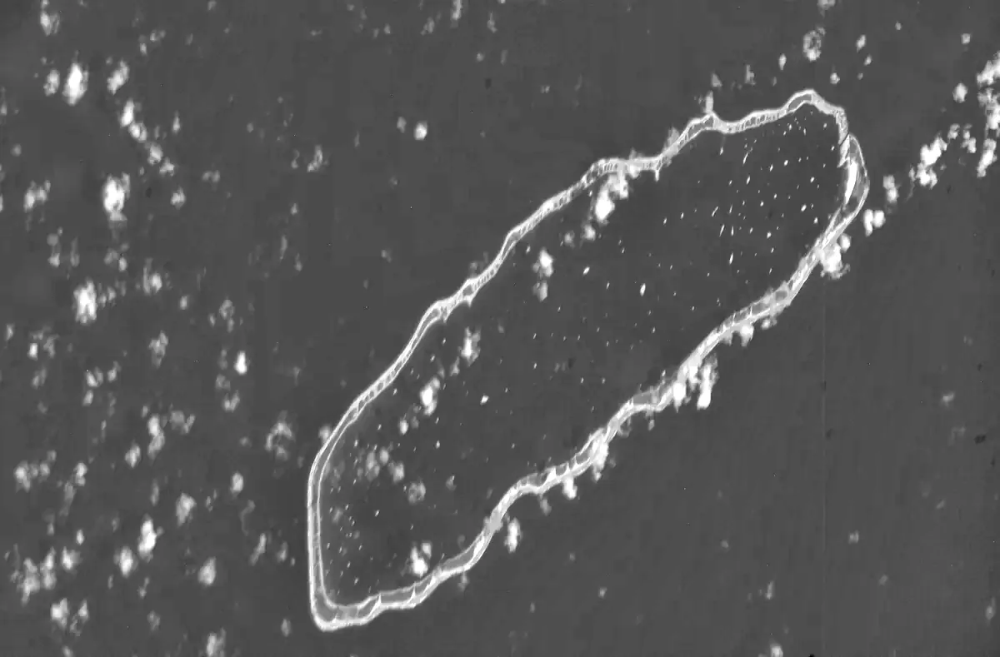

Laboratório, piloto
Ideias
Como nasce uma ideia
Uma ideia é a parte que se vê de um trabalho que não se vê. Em sete sessões, levas uma ideia tua por um método de cinco passos.
O método
Seguimos, passo a passo, o método de James Webb Young, publicitário norte-americano, em A Technique for Producing Ideas (1940), um livro de poucas páginas. Há outros; escolhemos este por ser simples, claro e útil.
- 1 Juntar material
- 2 Trabalhar o material
- 3 Largar
- 4 A ideia aparece
- 5 Dar forma e pôr à prova
Começa aqui: passo 1 de 5
Sessão 1: Ver ou observar?
O detetive Sherlock Holmes, a historiadora de arte Amy E. Herman, um quadro do pintor Georges de La Tour e a escada da escola.
No fim, em papel: o auto de observação do grupo.
Começar a sessão 1 →Quantos degraus tem a escada que sobes todos os dias?
Watson, o amigo médico de Holmes, subiu-lhe a escada centenas de vezes e não sabia quantos degraus tinha. Holmes sabia: dezassete. Na sessão 1, contas os da escola.Na sala: cada um escreve o seu número antes de alguém dizer o dele.

As sete sessões
Ver
Passos 1 e 2: juntar material, com os olhos e com as mãos, e começar a trabalhá-lo.
Treinar
Sessões 3 e 4, em preparação
Passos 2 e 3: trabalhar o material na cabeça e, depois, largá-lo.
- Sessão 3: O caleidoscópio Em preparaçãoPassos 1 e 2 de 5: o material geral e as relações. Leva à peça Lista de substantivos.
- Sessão 4: Três cachimbos Em preparaçãoPassos 2 e 3 de 5: trabalhar o material e largá-lo. Leva à peça Cópia lenta.
Criar
Sessões 5 a 7, em preparação
Passos 4 e 5: a ideia aparece, ganha forma e vai a quem a pode criticar.
- Sessão 5: O estribo Em preparaçãoPasso 4 de 5: a ideia aparece. Leva à peça Do conceito ao argumento.
- Sessão 6: A manhã seguinte Em preparaçãoPasso 5 de 5: dar forma e pôr à prova. Leva à peça A matriz por meio.
- Sessão 7: As versões à mostra Em preparaçãoOs cinco passos juntos. Leva à peça O espaço expandido.